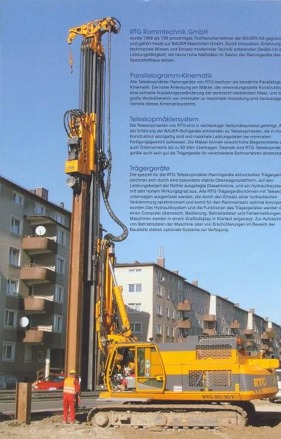
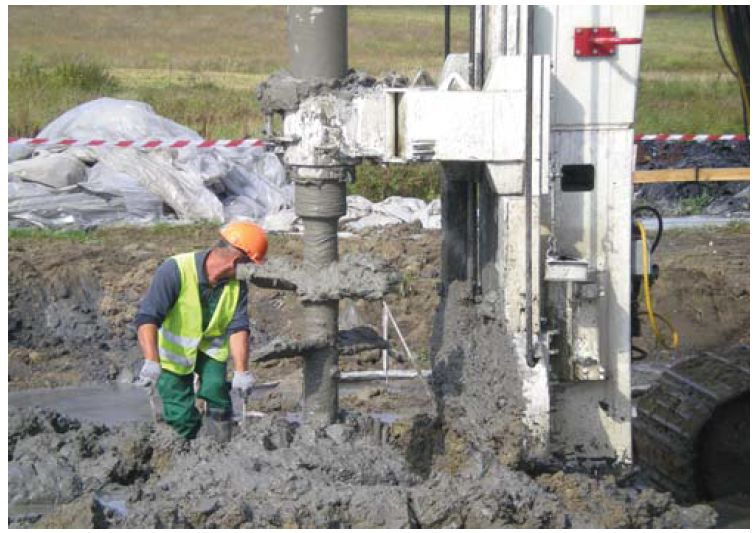
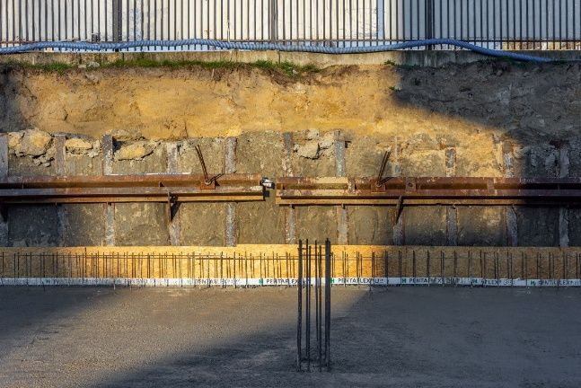
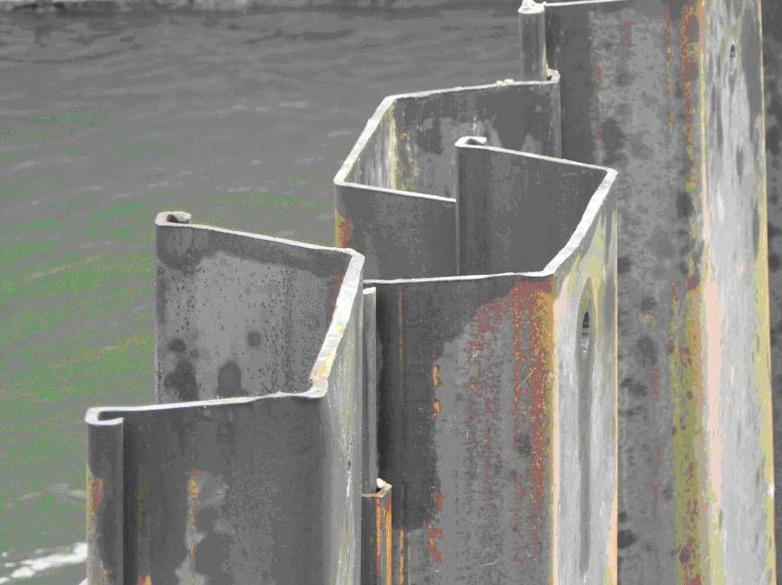
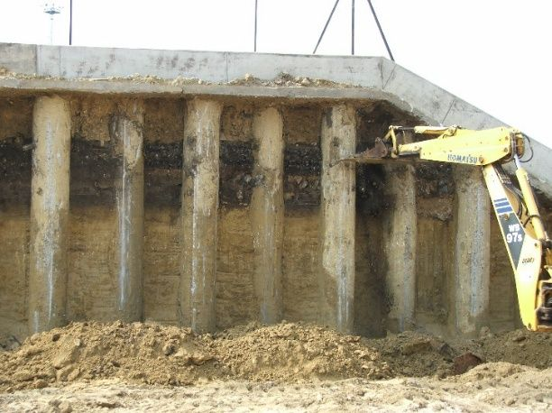
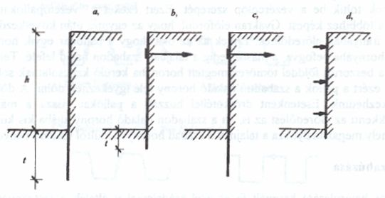
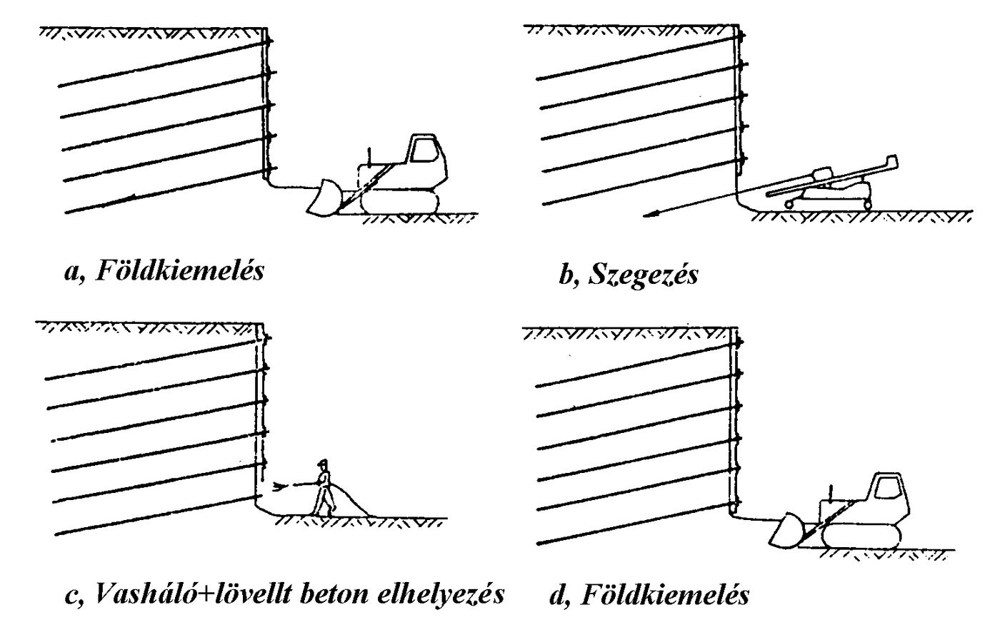

Basics
Every foundation goes below ground level. As long as only a foundation trench of a metre or two is needed, the soil – except coarse-grained, cohesionless soils – will stand for a short time even in a vertical face. From one basement level downwards, however, the side of the excavation has to be either replaced by a slope or supported by some structure – and if the excavation reaches below the groundwater, the water has to be kept out as well.
Pit, trench, working space
If we dig out the soil for a single foundation, we speak of a foundation pit (pad footing) or a foundation trench (strip footing). If it is for a whole structure, we speak of an excavation (construction pit) and a trench. A trench is really a narrow excavation: typically at most 1–3 m wide, made for linear works – for example for laying utilities – and backfilled at the end of the work.
The deeper the excavation, the more likely it is that groundwater appears. If the bottom of the excavation goes below the construction groundwater level, dewatering has to be provided too. That is why the excavation support and the dewatering have to be designed in parallel with the foundation – in some systems (for example the diaphragm wall) the excavation support is itself the foundation.
The size of the excavation is determined by
- the dimensions of the structure (+ working space beside the walls and the waterproofing),
- the traffic and transport needs (ramp, crane, excavator),
- the dewatering needs (location of drains, sump, wells).
The type of support depends on
Tap a criterion!
What holds up the wall?
The support can be temporary – its role ends once the underground structure is complete – or permanent, when it becomes part of the structure (underground car park, subway, tunnel). Equilibrium can be provided in four ways, and often a combination of them is the solution, for example an embedded, anchored wall.
The possible structures – a technology map
An excavation can be supported by sloping (without any structure), by shoring (the opposite soil faces are braced against each other), by embedded retaining walls – a wall with spaced reinforcement, a sheet pile wall, a pile wall or a diaphragm wall –, which in a deeper excavation are complemented by tie-backs or internal propping, by reinforcing the soil itself with nails, and finally by special solutions. The chapters follow the same order. Each tile takes you to its own chapter; the badge at the top right: ▶ number – animated video, ▶ BME – real footage on the BME YouTube channel.
The diaphragm wall and the large box (box foundation) are also excavation supports – we discussed them under deep foundations. A diaphragm wall often supports the excavation, keeps out the water and carries the permanent loads all at once.
Sloped excavation
The simplest solution – it needs no serious ground engineering technology –, but not necessarily the cheapest. It is only possible where there is no structure right beside the excavation and there is enough room. It takes up a lot of space, a large volume of soil has to be moved and stockpiled (which also needs room), then, once the structure is complete, replaced and compacted in layers. Some soils (e.g. highly plastic clays) are not suitable for backfilling after excavation, or only with stabilisation; wetting and drying of the stockpiled soil can also be a problem.
- The steepest inclination of the slope has to be determined by a stability analysis; in cohesionless granular soil the slope angle cannot be greater than the angle of internal friction (β ≤ φ).
- A slope higher than 3–5 m should have a berm.
- An inward-dipping clay layer is dangerous (especially with perched water), and an unexpected rise of the groundwater can also cause slope movement.
- Nearby sheet pile or pile driving and the dynamic effect of traffic reduce stability.
- Draining rainwater away is very important, both in the excavation and at the surface.
- Above the slope, do not stockpile within the failure plane; in design, according to the standard, a surface surcharge of at least 10 kPa can be taken into account.


The volume of soil in a sloped excavation grows with the square of the depth: for a 6 m deep excavation with a 1:1 slope, 18 m³ of extra soil per metre run on each side has to be dug out, stockpiled, then compacted back – at 12 m it is already 72 m³. On an urban plot a supported wall is therefore almost always built.
Trench shoring
Shoring means “bracing one side against the other”: the pressure of the two soil faces bounding the excavation or trench is taken by compression members, struts – so the earth pressures of the two sides push against each other. Since the buckling length of a strut grows with the width of the excavation, the method is used mainly in narrow, 1–3 m wide utility trenches.
The elements of the shoring
Traditional shoring is built on site from three elements: the soil face is lined with planks, these are held together by walings, and the walings are braced against each other by struts.
In the past all three elements were made of timber: 2-inch (48 mm) planks, timber walings of 12–24 cm side length and round timber struts of 12–16 cm diameter. Today steel is typically used: to line the soil face, Patria and Union trench sheets, or possibly CS corrugated sheets; for walings, hot-rolled I and U sections; for struts, I-beams, tubes or – most often – adjustable-length steel screw struts.
The way the shoring is built depends on the kind of soil, whether it has cohesion, and to what depth it can be dug at all without support, for a short time.
Patria and Union trench sheets are thin-walled (3–6 mm) profiled sheets with an effective width of 25–30 cm. Their joint is not watertight, so they are only for shoring, not for keeping out water – unlike the interlocked, watertight steel sheet pile wall (see Chapter 4).


How deep will a vertical soil face stand?
Above the groundwater, in cohesive soil, a vertical soil face is temporarily stable without support down to a certain depth m₀. This depends on the cohesion, the angle of internal friction, the unit weight and the surcharge acting at the edge:
In theory the trench could be dug down to m₀ without support. But the exposed soil face is exposed to the weather (drying – shrinkage, soaking), its condition can deteriorate, so for occupational safety it has to be shored in any case:
Shoring is always needed if the trench can be subject to dynamic effects (traffic, piling) and beside buildings – and the safety of the shoring has to be checked by calculation.
In the United States, about 80% of fatal trench collapses happened in trenches shallower than 3 m (10 feet). One cubic metre of soil weighs 1.5–2 tonnes: from behind a 3 m high vertical face, a wedge of roughly 4 tonnes per metre run can slide down.
In January 2025 in Tarcal, the side of an excavation about 4–5 m deep with almost vertical sides, dug for a sewer repair, collapsed onto a worker, who lost his life. The side of the excavation was probably not adequately secured; the investigation looked into breaches of the occupational safety rules.
In Hungarian utility practice, for example: for an excavation deeper than 5 m – or if a static or dynamic load acts beside the edge – the safety of the shoring has to be verified by calculation; a 0.5 m strip has to be left free at the edge of the trench; a ladder is needed in the trench; crossing over the struts or using them as a work platform or for storing materials is forbidden; voids behind the shoring have to be filled.
Four planking methods
Depending on the “relationship” between m₀ and the planned depth (H), the planks, walings and struts can – and must – be placed in different ways:
Vertical planking
Dig to full depth, then vertical planks, horizontal walings on them, struts – in at least two rows.
Stepwise driven planking
Downwards in steps of depth m₀, driving the planks further at each step; the walings are temporarily supported.
Horizontal planking
Excavation in steps with horizontal planks; the vertical walings are replaced by longer ones at each step.
Pre-driven planking
Coarse-grained soil: the steel sheets are driven or vibrated in before excavation, then the soil is dug out in steps.


In more stable, cohesive soil open planking is allowed: about every second plank can be omitted (the spacing is at most 0.5·m₀). Excavations deeper than 6 m are divided into sections: this gives stepped shoring, where the upper part is about 2×20 cm wider than the lower one.
Shoring is always removed from the bottom up, keeping pace with the backfill compacted in layers (15–20 cm): a strut may only come out once soil already supports the face below it. The ends of pre-driven sheets always remain at least 30 cm in the soil.
Strut pressure and design
Shoring is designed with simplified methods: an exact calculation would be very complicated, because the earth pressure that develops depends strongly on the installation (the degree of loosening or of preloading) – it lies somewhere between the active and the passive state. On the planks we therefore assume a uniformly acting equivalent horizontal load, which is really the reaction of the preloaded struts: this is the strut pressure.
Design uses simple structural models – usually beams on two or three supports: the planks and walings are checked for bending, the struts for compression (with buckling).
Trench boxes
Over the last two decades, prefabricated trench boxes that can be reused many times, lifted in quickly and used in any ground conditions have come to the fore. They are typically made in one piece from stiffened steel plates; in many cases only the “lining of the soil face” is in one panel, with hidden walings, or separate stiffening walings are used and braced against each other with screw struts.
The box (two panels with adjustable struts between them) is lifted in and pushed down by the excavator – the worker does not have to step into an unprotected trench. There are two ways to install it: placing it into a trench already dug (only in temporarily stable soil), or sinking it while digging (in loose soil and beside traffic this is compulsory).
Advantages
- Can be installed by machine from the surface
- Fast, can be reused many times
- A rigid shield protects the pipe layers
- Can be used in any soil
Limitations
- Box: to a depth of about 4–6 m
- The struts get in the way of lifting in long pipes
- A crossing utility can block it
- Heavy (1–3 t per box), a suitable excavator is needed
Strictly speaking, a trench box is a passive shield: it does not prevent the soil from moving, it only protects against it – the soil moves until it rests on the panel. That is why the gap between the box and the soil face has to be filled at once. A basic box 4.5 m long with 100 mm panels weighs nearly 3 tonnes – yet an excavator pushes it down with the back of its bucket, corner by corner.


Shoring a wide excavation
The wider the excavation, the longer the strut – and the more easily it buckles. For excavations wider than about 3 m, much more “robust” bracing is needed: struts braced in several directions, raking struts bearing on the bottom of the excavation, tieback anchorage or large-diameter steel tubular struts.
The enemy of the long strut: buckling
A slender member in compression can deflect sideways before its resistance is exhausted – this is buckling. The elastic critical force decreases with the square of the strut length: in an excavation twice as wide, the strut carries only a quarter as much.
If we want to use traditional struts, they have to be braced in several directions – this makes work in the excavation much more difficult, since the bracing blocks the middle of the excavation.
In a wide excavation the horizontal struts have to be supported by a column about every 6 m against buckling. According to the German DIN 4124, the bracing of the strut rows has to take at least 1/100 of the sum of the strut forces – that is why diagonal and corner bracing is placed between the struts.
One of the old carpenters’ arguments for pine struts: an overloaded spruce strut creaks loudly before it breaks – it gives a warning. In standard timber shoring to DIN, the maximum buckling length of round struts is only about 2 m.
Raking struts to the bottom of the excavation
The soil faces do not necessarily have to be braced against each other: the wall can also be supported by raking struts bearing on the bottom of the excavation. But the force of a raking strut also has a vertical component – the strut can rotate out, so its vertical equilibrium also has to be checked, and the strut has to be flat enough.
The base slab of the structure to be built can also be used to advantage for support – but then the base slab has to be built in stages: first its inner part is built while an even larger soil support (earth berm) is left sloping at the edge, and the raking struts bear against it – before the full excavation.
The construction of the foundation and of the basement walls and their waterproofing is always a problem, because the strutting system can only be removed once the basement structures (walls and slabs) are complete and can take the earth pressure acting as a diaphragm.
The buckling of the raking strut and the connection of the strut head; the uplift of the wall (or of the soldiers) from the vertical force; sliding of the foot of the strut and of its thrust block; the stability of the earth berm – and with high groundwater, the uplift of the young base slab too.
Advantages
- The middle of the excavation stays free
- Can be cheaper than horizontal steel struts
- Does not reach under the neighbouring plot
Limitations
- The berm and the struts take up the edge strip
- Slab built in stages, construction joints
- Rather for moderate depths (one strut row)
If there is room – or if the excavation is very wide
Passive tieback
If there is room beside the excavation, the retaining wall can be tied back with reinforcing bars or tie rods to I or U sections driven outside the failure plane – these run 0.8–1.0 m below the surface in a narrow trench.
On to Chapter 5 →Steel tubular struts
In wider excavations, larger-diameter steel tubular struts are most often used as struts today – so in most cases no intermediate bracing is needed.
On to Chapter 5 →Ground anchors
A “clear” excavation can be achieved with tieback anchors: the support goes behind the excavation, the working space stays completely free – in return, the anchors may reach under the neighbouring plot.
On to Chapter 5 →Retaining walls for excavations
If the excavation is deeper and wider than can comfortably be braced with struts – or a street or a neighbouring building stands right next to it – the soil face is held by a wall structure installed in the ground before excavation. These walls extend below the bottom of the excavation: the support is provided partly or wholly by embedment in the soil below the excavation base. For smaller excavation depths they stand as cantilevers; for deeper excavations the embedment is combined, keeping pace with the excavation, with internal bracing (strutting), back-anchoring or slabs. These embedded retaining walls fall into four groups: walls with spaced reinforcement, sheet pile walls, pile walls and diaphragm walls – and the chapter follows this order.
Walls with intermittent reinforcement
Sheet pile walls
Pile walls
Diaphragm wall
In walls with spaced reinforcement the reinforcement is provided by closely spaced steel sections (I/H), while the earth pressure is taken directly by the material in the gaps; they are typically built as temporary structures. This group includes the soldier pile wall, the jet grout wall, the reinforced self-hardening slurry wall and the deep mixed wall. In the other three groups the whole wall structure carries the load: the sheet pile wall consists of interlocking piles, the pile wall of a spaced, contiguous or secant row of piles (in a spaced pile wall the soil arches between the piles), and the diaphragm wall of panels concreted under slurry.
Which one we choose is decided by the same criteria as for any excavation support: the available area, the soil, the groundwater, how long the excavation stays open, how built-up the surroundings are (noise, vibration, movements), the size of the project and the available equipment.
The soldier pile wall, the jet grout wall, the reinforced slurry wall and the reinforced deep mixed wall work in the same way structurally: the closely spaced steel I/H sections carry the load to the supports and into the embedment. The difference is the material in the gaps, which takes the earth pressure directly: timber or concrete lagging, or shotcrete; soil concrete made by jet grouting; self-hardening slurry; soil concrete made by deep mixing. This decides whether the wall is watertight.
Siemens (soldier pile) shoring
One of the most economical temporary vertical supports for dry, not too deep trenches and excavations above the groundwater: it can be used only as temporary excavation support, above the groundwater. It comes into play where the excavation is already too deep and too wide for cross-strutting – deeper than 6 m and wider than 3–4 m – but not yet so deep that a stiff, watertight wall is needed.
- Steel soldiers. Steel I, H or coupled U sections are installed in the ground at close spacing, every 1.5–2.5 m – depending on the soil, by driving, by vibration, or placed in a bored hole and concreted. A closer spacing may be justified by higher loads.
- Bore and embedment. For noise reasons the soldiers are nowadays mostly placed in bores – this way layers that are hard to drive through cause no problems either. The bore may be unsupported or supported by fluid; after inserting the soldier, the bore must always be concreted, especially below the excavation level, because that is where the embedment works.
- Lagging keeping pace with the excavation. In the gaps the soil is supported, as the excavation proceeds in stages, by parallel timber or concrete lagging boards (panels). The timber boards are tensioned between the soldiers with the help of walings and wedges. Instead of lagging, shotcrete reinforced with steel mesh can also be used.
- Structural action. The soldiers work as vertical cantilevers, or – tied together by a waling – as multi-span beams supported by struts or ground anchors: the wall can be anchored and strutted.
Advantages
- can be reused many times – the soldiers can be pulled out
- gives a “clear” working space
- easily adapts to the shape of the excavation and to utility crossings
- set in bores, it is quiet and low-vibration
Disadvantages
- not watertight – only as temporary excavation support, above the groundwater
- labour-intensive, so it is increasingly giving way to fully mechanised walls
- flexible wall: settlement can occur behind it – beside a sensitive neighbour only with conditions
- timber lagging left in the ground rots
The “Berliner Verbau” got its name from the construction of the Berlin underground and spread in the early 20th century: driven I-beams with timber planks wedged between them. The Berlin underground and elevated railway was built from 1896 by Siemens & Halske (it opened in 1902) – the Hungarian name “Siemens shoring” probably refers to this. Timber lagging left in the ground rots, and the soil behind the wall can settle even 20–25 years later.
In 2004 a soldier pile wall collapsed during backfilling, causing a fatal accident: the planks lost contact with the soil, the gravel ran out, and the hangers of the planks were missing. The planks may only be removed from the bottom up, keeping pace with the backfilling.





Jet grout wall
A structure that works in the same way as the soldier pile wall, in which the steel members are placed in columns treated with jet grout: a small I/H or tubular section is placed in the spaced, touching or secant jet columns, and it is often combined with reinforced concrete piles. In Hungary it is typically made with single or double fluid (cement grout, or cement grout + air) jet technology.
The essence of jet grouting is that the soil or weaker rock is broken up and disaggregated through a drill rod by a high-pressure fluid jet and mixed with binder: this creates soil concrete bodies – columns or panels (walls).
- The column diameter depends on the soil and the method: 50–100 cm with single fluid jet (50–70 cm in clay, 80–100 cm in sand), about 120 cm with double fluid jet. Withdrawn without rotation, with a two-sided nozzle, a V-shaped jet panel of 180–200 cm can also be made.
- Because the jetted soil is a very dense fluid until it sets, the size of the steel member that can be inserted is limited – whatever the size of the column: only the vertical line passed through by the drill rod and its immediate 15–20 cm surroundings will accept it.
- A spacing 10–20 cm smaller than the diameter ensures watertightness: the wall can also be made quasi-watertight – a great advantage over the soldier pile wall.
- The steel members are surrounded by solid “soil concrete”: no subsequent filling of the bore is needed, and with secant columns no lagging either.
Without steel reinforcement it is also built as a gravity wall – this is not counted among embedded retaining walls.
The cement grout jet leaving the nozzle of about 2.5 mm can reach 200 m/s – a pressure of 400 bar roughly corresponds to the water pressure of the ocean at a depth of 4 km. So a bore of about 10 cm becomes a soil concrete column nearly 1 m in diameter. With double and triple fluid jets, the breaking up of the soil is also aided by air and/or water. The method was born in Japan in the 1960s–70s.
Diameter and strength depend on the soil, so they must be verified with trial columns. If the path of the returning cement grout is blocked, the excess pressure can lift the ground and the neighbouring building. Where is it used? For excavations above the groundwater or slightly below it, where there is no room for a pile or diaphragm wall: 1–2-level underground car parks, later extensions.


Reinforced self-hardening slurry wall
The reinforced self-hardening slurry wall (reinforced cement-bentonite wall) combines the structural features of the soldier pile wall with the watertightness of the diaphragm wall. The soil is excavated in the same way as for a diaphragm wall, with a diaphragm wall rig (grab) – for smaller depths also with a hydraulic excavator – under slurry support. So-called self-hardening slurry (bentonite slurry + cement) goes into the trench. After reaching the required depth and placing the steel reinforcement, however, no concrete replaces the slurry: the slurry, which hardens thanks to its cement content, gives the wall its texture and watertightness (“single-phase” method).
Closely spaced I/H beams – typically at 1–2 m – are built into the slurry: they provide the bending resistance. The slurry – with a minimum compressive strength at 28 days of typically 0.5–1.4 MPa, depending on the mix – transfers the earth and water pressure to the reinforcing members by arching.
It is used as a temporary, removable excavation support wall: generally for excavations at most 7–8 m deep, where the wall has to be removed later. For quasi-watertight excavation support it is the optimal technology – if there is no significant surface load or settlement-sensitive structure on the retained side, and the soil is favourable for trench stability. If necessary, the reinforcing members can be supported by passive or lightly prestressed anchors, or by steel bracing placed along a waling. The wall is at least 40 cm thick.
A typical mix per cubic metre is, for example, 920 l of water, 40 kg of bentonite and 200 kg of cement (often slow-setting blast-furnace slag cement). Excavation can start about 2–4 weeks after the wall is complete; the exposed face has to be protected against frost and drying (e.g. with sheeting). Compared with a sheet pile wall, even half as much steel may be enough.


Reinforced deep mixed wall
An increasingly common embedded retaining wall on the international market. A wall is formed by wet deep mixing: the soil is mixed with binder in place – with trenchmix technology, CSM (Cutter Soil Mixing) technology or column-type mixing (e.g. multi-auger colmix) – and then closely spaced steel I/H beams are installed in the fresh mix: they provide the bending resistance. It is used as a temporary excavation support and seepage cut-off wall (removable).
CSM is similar to diaphragm walling with a cutter (hydrofraise), but here only binder is introduced into the ground, and the in-situ soil is mixed: the two pairs of counter-rotating cutter wheels break up the soil on the way down (while binder suspension is added), reverse at the bottom and mix it homogeneously on the way up. In this way a continuous wall reinforced with steel members can be formed; first the primary panels are made, then the secondary panels cutting into them. Column-type mixing typically produces soil concrete columns 1.0–1.5 m in diameter, down to a maximum of 50 m.
Deep mixing is quiet and vibration-free and produces minimal waste – the in-situ soil does not have to be removed –, it offers a good option for rehabilitating contaminated sites, and it can be carried out at low temperatures. The columns and panels can be placed next to each other in any arrangement, so the method can replace more expensive foundation and ground improvement methods. Depending on the soil to be improved, the binder is lime, cement, gypsum, granulated blast-furnace slag or a mixture of these. The rigs continuously log depth, binder quantity and inclination. The CSM method was developed by Bauer in 2004 from the diaphragm wall cutter. Its drawbacks: it is soil-dependent, and it needs a large rig and a mixing plant.






Steel sheet pile wall
Sheet pile walls are corrugated excavation support elements of steel or reinforced concrete, installed by driving, vibration or pressing and connected to each other by interlocks (clutches). The interlocking design makes full watertightness achievable. They are permanent or temporary structures: temporary (steel) sheet piles are recovered, extracted and reused.
Steel sheet piles are used most often, especially for temporary excavation support: the piles are easy to drive and extract, and their watertightness is the best. Many types exist – straight, half-wave (U and Z shaped) or full-wave –; in Hungary U-profile Larssen and Z-profile Hoesch type piles are typically used. In flood defence CS type piles are also used – a transition between trench sheets and sheet piles.
- Installation: diesel or hydraulic hammer, or – mainly in granular soil – a vibrator. The piles are driven/vibrated into the ground in steps, one by one, or more efficiently 2–4 elements held together; most often in factory-pressed pairs. Installation is fast, and they can penetrate even dense, hard soils. In soft soil pressing is also possible.
- Noise and vibration: the drawback of sheet piling is the noise and vibration it causes. In built-up areas it must be checked whether the vibrations of installation damage the surrounding structures – they can reach as far as 20–30 m.
- Obstacles: rubble fill, stony layers, thin rock bands – in such cases pre-drilling is often used.
- For permanent use, corrosion protection is needed: a thicker section and hot-dip galvanising.
Examples of use
- excavation support walls in contact with open water
- temporary excavation support walls for utility works
- walls needed to widen existing roads and remove their embankment slopes
- where space is tight and construction has to be very fast
- where noise and vibration are acceptable
Vibrating: the vertical vibration of counter-rotating eccentric masses “fluidises” the granular soil along the pile. Driving (diesel or hydraulic hammer): in cohesive, hard soil and for the last metres. Pressing in: the machine grips the piles already installed, which provide the reaction – vibration-free and quiet.





Timber, reinforced concrete and plastic sheet piles
Timber: no longer used today. It was used down to 2–6 m, only as a permanent structure, because extraction is awkward and the timber gets damaged. First guide piles were driven, and the tongue-and-groove planks were driven between them.
Reinforced concrete: for permanent use next to watercourses, as a river wall – mainly for harbours and bank protection. Its drawback is the great weight – it must also be designed for transport (elements 4–8 m long) –, and the piles interlock poorly and are hard to drive. They are often prestressed, which also reduces the weight. They are driven into the ground with a diesel hammer, aided by water jetting.
Plastic: not yet widespread in Hungary. It is used for permanent bank walls, harbours and canal banks (e.g. the Geoflex system): 30 cm wide “pressed” corrugated sheets are driven with vibrating and water-jetting equipment, or in very soft soil pushed in with an excavator. The sheets are connected by an interlock made of an inner and an outer section. Its advantage is the low weight (about 9 kg/m²) – no heavy machines are needed.

The Romans already used timber sheet piling, and until the 19th century it was made only of timber. The steel sheet pile wall appeared in 1902 in Bremen (Tryggve Larssen). In the splash zone of seawater, a steel wall can lose about 3.75 mm of thickness in 50 years – plastic does not corrode, but its resistance is much lower.
Pile walls
Pile walls are spaced or closed (contiguous or secant) wall structures made of cast-in-place reinforced concrete piles, typically built with replacement boring technology. In Hungary mainly CFA piling is used (max. 20–24 m), less often cased/slurry-supported bored piles (greater length), and for smaller excavation depths precast/driven or bored micropiles. Pile walls can be built as permanent and temporary structures: basically as excavation support, but at the same time also as a foundation structure.
- Spaced: in Hungary this is the most widespread version – mainly in very stiff soils (clays) or soft rocks, for excavations above the groundwater or affected only by seasonal perched water, as a temporary or permanent, not watertight excavation support wall, often to support tight urban excavations. Thanks to the favourable strength of the soil, fewer piles are needed. The gap is typically 20–60 cm, at most the pile diameter: its acceptable size depends on the stability and arching ability of the soil. Most often a surface drain and shotcrete reinforced with steel mesh are placed between the piles.
- Contiguous: the piles are placed directly next to each other, with no gaps – yet it is not a watertight solution. It is chosen when the soil is not stable on its own (granular soil) but no watertightness is needed, or when a dense layout is required structurally.
- Secant: a watertight wall can be built with it, but compared with the diaphragm wall it is economical only in special cases, so it is rarely built. A concrete guide wall is built on top. Every second pile is completed without reinforcement, and a few hours later the pile between them – cutting about 10–12 cm into its neighbours – is built with reinforcement: these take the bending moment.
- Gaps filled with jet columns: by filling the gaps between the piles with jet grout columns, excavations that are not watertight but can be dewatered can be formed – with less technological effort than secant pile walls.
Especially for permanent walls, the perched water appearing periodically between the piles must be drained: in most cases steel mesh is fixed to the pile wall and shotcrete is sprayed on, with a surface drain or geotextile behind it and properly protected drainage pipes between the piles. The pile wall can be a cantilever, but it can also have temporary or permanent supports – steel tubular struts, ground anchors, structural props –, which connect to the reinforced concrete capping beam tying the piles together at the top, and deeper down to walings fixed to the face of the piles. The most common applications: urban deep excavations (e.g. underground car parks, underpasses) and the permanent support of road cuttings.
In a secant wall, the concrete of the primary piles is often deliberately weaker or slow-setting (as little as 1–3 MPa, or 10–20 MPa) – so that the neighbouring secondary pile can cut into it. The secondary pile is always full-strength reinforced concrete.
The excavation of Paks II is supported by an anchored secant pile wall of 88 cm piles. A Budapest example: the excavation of the “Kertész25” apartment building in Kertész utca, District VII, was supported by a spaced wall of CFA piles.





Diaphragm wall
Diaphragm walls are made by reinforcing and concreting a vertical-sided trench. They are most often used for earth retention, less often as a foundation structure – they were covered in detail under deep foundations. As excavation support they are chosen when the excavation is deep, the groundwater is high, the movement of neighbouring buildings is critical, and the wall can be part of the permanent structure – in that case the excavation support is also the foundation system. It is supported by anchors, tubular struts or top-down slabs (see support structures).
- Guide wall. A pair of reinforced concrete beams 1.0–1.5 m high and 20–25 cm wide is built on both sides of the trench: it guides the grab, supports the loose upper soil, and it is the setting-out reference.
- Support slurry. Bentonite slurry is fed continuously into the trench: water with bentonite (a colloidal clay) dispersed in it. It prevents groundwater inflow and counterbalances the water and earth pressure acting on the trench faces – this ensures trench stability. Mixing it requires a separate mixing and settling plant on site.
- Excavating the panels. There are two methods: a grab or a hydrofraise (trench cutter) with cutter wheels. With the latter, the soil is pumped out together with the bentonite slurry with the help of cutter discs, teeth and rollers; at the plant the soil and the slurry are separated, the excavated soil is taken away, and the cleaned slurry is returned to the trench. A stop-end is placed at the end of the panel, with a water-swelling waterstop threaded into it.
- Placing the reinforcement cage. The cage, suspended from a crane, is lowered into the trench and fixed on the guide wall.
- Concreting. Concrete is placed from the bottom up through a tremie pipe: the concrete displaces the slurry.
Excavation can be done in alternate panels – then every second panel is completed first, and only after that the intermediate panels –, or it can be continuous.
An excavation of nearly 10 000 m², about 16 m deep, for a four-level underground car park on the bank of the Danube: an 80 cm thick diaphragm wall supported by two rows of anchors which, keyed into the impermeable clay, also keeps out the groundwater.
Support structures
Excavation support walls usually reach below the bottom of the excavation: their embedment provides one support through the passive earth resistance. As cantilevers – without other support – they are stable only for excavations of a few metres (max. 4–6 m). For a deeper excavation they have to be supported at one or more levels, which gives statically indeterminate continuous beams. The support can be of two kinds: a tie-back reaching behind the wall (ground anchor, passive tie-back) or internal propping placed in the excavation (steel pipe strut, propping slab).
Structural models of the walls
Structurally, excavation support walls fall into four main types:
- free-standing, fixed-earth (cantilever) wall,
- wall supported at one level, free-earth,
- wall supported at one level, fixed-earth,
- wall supported at several levels, free-earth.
Depending on the embedment depth, either true fixity develops or only a “free-earth” structure: with a small embedment depth the fixing moment is low. The deeper the excavation, the more support at one or more levels is needed – the wall then becomes a statically indeterminate continuous beam.

Try out in the wall lab how the required embedment, the support force and the moment change with the structural model! Notice: an anchor drastically reduces the embedment depth and the moment compared with the cantilever wall, and a fixed toe gives a longer wall but a smaller span moment.
You will deal with these calculations in more detail in the course Underground structures, deep foundations. The wall lab shows the classical limit equilibrium methods (Blum’s fixed-earth wall, the free-earth wall, the equivalent beam, Peck’s apparent earth pressure) – today’s design works with beams on elastic supports and finite element models.
Ground anchors
An anchor is a structure that can transfer the tensile force from the supported structure to the bearing medium (soil, rock). It is similar to a soil nail, but there are essential differences: it does not take the force along its whole length, it is much larger (in diameter and length), and its resistance is at least an order of magnitude greater.
There are many kinds of ground anchor, but we most often use prestressed, drilled, grouted ground anchors. Their advantage is that they reach behind the excavation, so a “clear” construction area remains – there are no struts in the excavation.
Anchors usually reach under neighbouring properties – often as far as 15–20 metres. On the one hand this raises legal problems (owner’s consent); on the other hand the anchor can run into existing structures (basement, utility, foundation). Where an anchor would get in the way later, removable anchors (whose strands can be pulled back) are also used.
What is it used for?
 Making a tunnel lining act together with the surrounding rock mass
Making a tunnel lining act together with the surrounding rock mass Anchoring structures that tend to float up
Anchoring structures that tend to float up Stabilisation against the forces caused by water flow
Stabilisation against the forces caused by water flow Tying back quay walls
Tying back quay wallsThe parts of an anchor
How is it made?
- Excavation below the anchor row – about 0.5 m below the planned anchor level; a waling or waling beam if needed.
- Drilling at an inclination of 15–30°, supported by casing or drilling fluid.
- Installing the tendon: 3–7 strands (or a Dywidag bar) with spacers; in a sheath along the free length, with the sleeved grout pipe beside them.
- Primary grouting from the bottom up, while the casing is withdrawn.
- Post-grouting at high pressure through the sleeve pipe – the grout body cracks and widens.
- Hardening for 8–12 days.
- Stressing and test loading with a hollow stressing jack, in stages – a test load record is made for every anchor.
- Lock-off at 80–90% of the design load: wedges grip the strands in the anchor head. The next excavation level can follow.
| Criterion of classification | Types |
|---|---|
| Design life | temporary (T ≤ 2 years, e.g. shoring) · permanent, like the structure (e.g. bridge abutment) – corrosion! |
| Type of fixity | with a grouted length (shaft friction) · with a mechanical device (“umbrella”) · with an expanded body |
| Surface anchors | fixed to an anchor pile (passive) |
| Load-bearing element | steel prestressing strand (general, for large forces) · steel bar (threaded, for smaller forces) · glass- or carbon-fibre bar (FRP, against corrosion) |
| Manufacture | factory-made · assembled on site (temporary only!) |
In Hungary drilled, grouted ground anchors are almost always made for a temporary function, for a design life of at most 2 years. Permanent anchors differ mainly in the stricter corrosion protection (sheath and grout along the whole length) and in the need for monitoring and re-stressing – for quay walls, mountain rock slopes and bridge abutments.
Design the anchor!
The fixed length has to be beyond the active slip surface – so the anchor length grows quickly with the depth of the excavation. Watch the plot boundary and the neighbour’s basement!
Test loading and lock-off
A test load record is made for every single anchor: the stressing jack loads the anchor in stages and cycles, and the movement of the head is measured. The elastic extension also shows whether the free length is really extending freely. At the end the anchor is locked off at 80–90% of the design load.
The grouted ground anchor was born in 1958 in a gravelly excavation in Munich: Karlheinz Bauer simply grouted the anchor rods, which could not be fixed reliably, into the gravel. Prestressed rock anchors had already been used in 1934 at a dam in Algeria. A single Ø15.7 mm strand has a breaking force of about 279 kN – nearly 28 tonnes.


Passive tieback
The essence of the passive anchor is that the wall is supported by an element able to take tension, connected to a structure – e.g. another wall or a row of piles – located far enough behind the soil mass it retains.
If there is room beside the excavation, the wall can be tied back with reinforcing bars or tie rods – placed 0.8–1.0 m below the surface in a narrow trench – to I or U sections, or possibly piles, driven outside the failure plane. For larger excavations (larger forces), the anchorage is to a pile wall or diaphragm wall, and a reinforced concrete beam is used for the connection.
The difference from prestressed anchors: without prestress, the expected movements of the wall are larger, typically a few centimetres. As permanent structures they can be made of reinforced concrete or corrosion-protected high-strength steel bars. They are particularly common for supporting quay walls and the deeper sections of open road underpasses; in towns they are rarer because of the lack of space.

The tie rods are not prestressed: the turnbuckle only takes up the slack (by hand, or for large rods with a jack at about 30–60 kN), then the rods are backfilled with compacted sand. The rod only takes force when the wall moves a few centimetres during excavation and the passive earth resistance develops in front of the anchor wall. In the port of Dublin, for example, tie rods up to 29 m long, M140, hold the quay wall.
Steel tubular struts
To brace wall sections near the almost right-angled corners of wider excavations, or opposite wall sections not too far from each other, steel tubular struts are used most often. In Hungarian conditions they are usually economical:
- if ground anchors cannot be installed because of unsuitable ground conditions or existing underground spaces next door;
- if the planned excavation is deeper than 15–20 m and, because neighbouring structures have to be protected from significant ground movements, a sufficiently stiff wall with small deformations cannot be built with anchors.
So they are popular mainly in tight excavations – road and pedestrian underpasses, small hydraulic structures – or in very deep urban excavations, e.g. metro stations (this is how all the M4 metro stations were built – at some stations the slabs also took part in the support, see the top-down method below). They hinder work inside the excavation, but because of their low labour demand, their reusability and the growing impossibility of anchoring, they are expected to come to the fore in Hungary.
The tubular struts are usually connected to capping beams or walings running at the top of the walls or at intermediate levels, so one strut supports several wall elements (diaphragm wall panels, piles, sheet piles). They are connected to the wall by drilled and bonded fixings attached to the end plate of the strut, or to an end plate cast into the wall in advance.
At the Crossrail Paddington station in London the strut forces fluctuated daily: they were smallest around 8 in the morning and largest around 7 in the evening. The additional force from temperature can be as much as 50% of the design load of the strut. In one London excavation (Merchant Square), struts with a span of 49 m, a diameter of 1.22 m and a capacity of 500 t were used.


Supporting slab – the Milan (“top-down”) method
First the retaining walls (diaphragm wall, pile wall) are built. If there are intermediate supports or columns, their foundations (piles) are made from the top and the columns are placed. Then the top slab is cast on the ground as formwork; acting as a diaphragm, it supports the retaining walls. The further levels are built by mining methods – through a muck-out opening left in the slabs, a transport tunnel built further away, or a “pocket” built beside the structure.
Technical difficulties
The supports of the slab (columns) have to be made in advance, out of sight – the accuracy is an order of magnitude lower than in conventional construction.
The soil has to be excavated under the supporting slab, in a confined space.
Ventilation and lighting of the enclosed working space have to be provided.
The slabs have to be connected afterwards to the columns made in advance; the walls of the substructure are built afterwards, hidden by the slabs – monolithic connections are hard to form.
Advantages
Why is it worth it?
- construction time is shortened: for a building, the superstructure and the substructure can be built in parallel
- disturbance of the surroundings largely ends, the surface can be reinstated quickly
- the slabs can be cast on the ground, without falsework
- the slab supports give great stiffness – small wall movement
Two stations of the M4 metro – Bikás park (Tétényi út) and Újbuda-központ (Bocskai út) – were built by the top-down “Milan” method: here the walls were also supported by the slabs. The method needs a surface closure of only about 6–8 months per station. It got its name from the construction of the Milan M1 metro (1957–1964), where diaphragm walls were first used on a large scale for an underground railway.

Soil nailing
Working in steps from the top down, nails are drilled, driven or fired into the soil face on a grid, steel mesh is fixed to the nails, and the face is covered with shotcrete. The soil mass “stitched together” by the nails works together like a gravity wall – the soil holds itself up.
The principle: the soil holds itself up
A nailed wall is not a structure built in front of the soil, but a reinforcement of the soil. The closely spaced, untensioned steel nails are put into tension by small ground movements and transfer the force by friction along their whole length. So a soil mass acting together like a gravity wall is formed, which with a suitable nail length can support even deeper excavations.
The excavation deepens from the top down, lift by lift: in each lift, excavation → nails → (drainage) → mesh → shotcrete, and the next lift may only follow once the shotcrete has hardened. Among the support structures the method is related to the ground anchor, but differs from it fundamentally (5.5).
It is usually built as temporary excavation support – for example over the top 2–3 metres above diaphragm walls –, but it is also used for permanent slope stabilisation; then corrosion protection is needed.
For an excavation of depth H, the required length of the nails varies between 0.6 and 1.2 H, depending on the soil. The grid spacing of the nails is typically 0.5–1.0 (1.5) metres.
The first nailed wall was built in 1972 in France, near Versailles: when a railway was widened, an 18 m high, 70° cutting in sand was nailed. The recommendations of the French CLOUTERRE research programme were published in 1991; by the end of the ’80s about 80 000 m² of nailed wall was already being built in France every year.
Construction lift by lift
Build the wall step by step! Set the depth, the nail length and the grid – the nail ends reaching beyond the slip surface (red dots) show that the nail really “grips” the stable soil.
The next lift may only be excavated once the shotcrete is at least 72 hours old or has reached a strength of about 10.5 MPa. While the lift is open, the exposed soil face has to stand on its own – that is why the soil must be stable for a short time in a vertical face 1–2.5 m high.
Nails, mesh, shotcrete, water
We distinguish four types of nail: driven, drilled and grouted, jetted and (possibly) screwed nails. They are most often made of 20–28 mm reinforcing bar, but can also be made of steel tube or steel bars. Most often – where possible – the reinforcing bar nails are driven in with “guns”.
Mesh
Typically a steel mesh of 6–8 mm bars on a 150 × 150 mm grid, fixed to the nails (e.g. welded with a piece of flat bar). In stable, clayey soil the shotcrete skin can even be omitted – then a geotextile goes under the mesh.
Shotcrete
The face is covered with 8–15 (20) cm of shotcrete. In the wet process, ready-mixed concrete is pumped and sprayed with air at the nozzle; in the dry process, the water is added at the nozzle (more rebound and dust).
Drainage
With perched water, a surface drain (with outlets) is placed behind the shotcrete, or the wall is drilled through on a 1–3 m grid, drainage pipes are placed, and the water is led through the wall – no water can build up and no water pressure can develop.
Corrosion protection
Permanent nails need corrosion protection, e.g. epoxy coating, a polyethylene sheath (corrugated PE tube, with grout around the nail) or cathodic protection. In international practice the PE sheath with adequate grout cover is the most common.
Pull-out test
The resistance is checked by pull-out tests: a hollow jack pulls the nail out of the wall. First on trial nails (suitability test), then by random sampling on the installed nails – e.g. in German practice on at least 3% of the nails, at least 3 per soil type.
Machines
Simple, small machines: an excavator to dig the lifts, a crawler drilling rig or a drilling mast mounted on an excavator, a grout mixer and pump, a shotcrete machine. They can even work from a crane-suspended platform.
There is a ballistic nail launcher: a compressed-air “cannon” mounted on an excavator fires a steel or glass-fibre bar about 6 m long and 38–40 mm thick into the slope in a single shot, at about 350–400 km/h – with no drilling and no spoil. It is used mainly to stop shallow slope slips quickly.
Where can it be used?
It can be used in practically any kind of soil – with a few important exceptions. Guess card by card before you turn it over!
Advantages
- relatively low cost
- simple, small machines – even in tight spaces
- easy to vary and modify (if needed)
- flexible structure, adapts well to different soils
- reserve of resistance, vibration-free construction
Disadvantages
- the soil has to stand in a vertical face of 1–2.5 m
- cannot be used with high, flowing groundwater (only with continuous dewatering)
- drainage is hard to solve
- in towns the dense nail field – often reaching under public land and streets – can run into utilities
- flexible wall: larger movement than with an anchored wall
Nail or anchor?
At first sight they are similar: both are steel elements drilled into the ground and grouted, carrying tension. But they work in fundamentally different ways – see how the force is distributed in them!
| Soil nail | Ground anchor | |
|---|---|---|
| Tensioning | none – a passive element | prestressed (to 80–90% of the design force) |
| Force transfer | along its whole length | only along the fixed (grouted) length; the free length is in a sheath |
| Layout | dense, on a 0.5–1.0 (1.5) m grid | sparse, row by row, on a capping beam or waling |
| Length | 0.6–1.2 H | at least 8 m (4 + 4 m), at most 25–30 m |
| Resistance | smaller | at least an order of magnitude greater |
| Testing | trial nails + random sampling | a test load record for every anchor |
| Behaviour | a “stitched-together” soil mass, a gravity wall | support of the wall on the soil beyond the slip surface |



Special solutions
What can we do if the groundwater cannot be kept out by any wall, if the working space is in the middle of a river, or if lowering the water level is forbidden? Then the special solutions come in: we freeze the soil, build a cofferdam in the river, or concrete the bottom of the excavation under water – and anchor it down.
Frozen wall
ground freezing · AGF · BodenvereisungThe essence of ground freezing is that we freeze the pore water of the soil: the ice glues the grains together, and the soil itself becomes the excavation support wall – watertight and load-bearing at the same time. It works in any saturated soil (sand, silt, mixed fill), also with an irregular plan and at great depth, no chemicals get into the ground, and the wall is completely reversible: once the cooling is switched off, it thaws.
Outside the line of the excavation, usually 2–3 m away, freeze pipes are drilled in one or more rows, typically about 1 m apart (0.9–1.5 m). Drilling accuracy is a key issue: if two pipes drift apart at depth, a gap may remain in the wall. Inside the outer pipe, closed at the bottom, there is an open down-pipe – the coolant flows down in the inner pipe and up in the annulus. Temperature pipes between the freeze pipes check whether the wall has closed.
The work sequence
- Design: soil profile, water content, salt content – and the most critical: the flow velocity of the groundwater.
- Drilling, pipes: freeze pipes and temperature pipes in one or more rows, with the inclination of the bores surveyed.
- Cooling: with brine (refrigeration plant, closed loop, about −30 °C) or with liquid nitrogen (−196 °C, tanker, the gas evaporates).
- Active freezing: ice cylinders grow around the pipes, then close into a continuous wall; this is shown by the temperature and by a rise of the internal water pressure.
- Excavation under the protection of the frozen wall, in short sections, with immediate temporary support by shotcrete (or segments).
- Maintenance freezing until the permanent structure is complete – with about 30–50% of the start-up energy. A common combination: a fast start with nitrogen, maintenance with brine.
- Thawing: after the cooling is switched off, watch for thaw settlement following the frost heave.
Advantages
- watertight and load-bearing at the same time
- in almost any saturated soil, also at great depth
- for irregular plans, can also be drilled from a tunnel
- no chemicals in the ground, completely reversible
Disadvantages
- expensive and energy-intensive, slow with brine
- flowing groundwater can prevent closure
- frost heave, thaw settlement next door
- frozen (especially clayey) soil creeps; accurate drilling is needed
- with nitrogen, danger of suffocation in confined spaces
The station box was built from the surface; the platform tunnels reaching under the Danube bank were built by a mining method (NATM), under the protection of ground freezing. The position of the freeze pipes was checked by 3D borehole surveying.
Artificial ground freezing was first used in 1862 in South Wales for shaft sinking. Friedrich Hermann Poetsch patented the method in 1883: a shaft sunk in running sand by freezing. Today it is also used for cross passages of tunnels, tunnels under rivers, TBM launch shafts and for sealing diaphragm wall joints afterwards.
Cofferdams in open water
cofferdam · FangedammIf a dry working space is needed in a river or lake – for example for the foundation of a bridge pier –, the working area is enclosed and the water is pumped out of it. The word “cofferdam” comes from the Latin cophinus, meaning basket. The crest of the cofferdam has to be at least about 0.9 m (or more than the expected wave height) above the design water level – this is the freeboard.
Earth or rockfill cofferdam
In shallow, slow water; sealed with a clay core or a sheet pile wall. Cheap, but wide: it narrows the channel and erodes.
Single-wall braced sheet pile cofferdam
A ring of sheet piles with internal bracing frames – typically at bridge piers, with an underwater concrete plug.
Double-wall filled sheet pile cofferdam
Two sheet pile walls with sand/gravel fill between them and tie rods: a gravity wall, no struts needed inside.
Cellular sheet pile cofferdam
Steel cells filled with sand (Ø 8–30 m): a self-supporting gravity wall in deep water, for long structures.
Bridge pier in a sheet pile cofferdam – step by step
- Barge, floating crane or temporary bridge; the bracing frame is placed on guide piles – it is also the template for driving the sheet piles.
- Sheet pile driving starts from the middle of the upstream side, in two directions, in panels; the ring is not closed at a corner.
- Underwater excavation with a grab – the water stays inside, balancing the external pressure; foundation piles if needed.
- Underwater concrete plug by the tremie method: the end of the pipe stays in the fresh concrete throughout, the concrete rises from below “like a cushion”.
- After hardening (a few days), pumping out; the water pressure squeezes the interlocks together, the seepage decreases. Further strut levels can be added meanwhile.
- The pier is built in the dry, finally backfilling, flooding (equalising the water pressure), removing the frames and extracting the piles.
When pumping out, the full water pressure acts on the bottom of the excavation from below. If the concrete plug (and its bond to the piles) is insufficient, the bottom can blow up in seconds and the water floods the working space. Without anchoring, the thickness of the concrete plug is roughly of the same order as the dewatered depth.
The river piers of the northern Danube bridge of the M0 were built by the reinforced concrete shell element method proven for river bridges: with a 5 m high steel guard wall bolted onto the shell elements, the working space could be kept dry up to the construction water level of 101.00 m above Baltic Sea level, and the shell elements were concreted in as formwork. The pile cap tying the piles together is 4.5 m high, including the underwater concrete.
Underwater base slab with anchorage
underwater concrete slab · UnterwasserbetonsohleIf the groundwater is high, the impermeable layer very deep, and the water level must not be lowered (because of settlement of neighbouring buildings, drying out of trees or a water-rights ban), the excavation is dug under water. Its bottom is closed by an underwater concrete slab, held down against uplift by tension piles (anchors) installed on a dense grid.
The construction sequence: enclosure with sheet piles →


The excavations of Berlin’s Lehrter Bahnhof (today Berlin Hauptbahnhof) were closed by a 1.5 m thick underwater concrete slab, fixed by 6500 GEWI piles on a 2.7 m grid (Ø 63.5 mm bars, 17.5–26.4 m long). At Potsdamer Platz in the ’90s, about 24 000 m² were excavated under water, 20 m deep – whole “artificial lakes” appeared in the middle of the city.
Advantages
- no groundwater lowering: the neighbours do not settle
- a thin (1–1.5 m) slab instead of many metres
- little residual seepage
Disadvantages
- diving work, delicate underwater concreting
- many tension piles, slow work cycle
- the slab–anchor head connection is critical
3D excavation designer
Put together your own excavation! Choose a soil profile, a retaining wall and a support, set the depth, the groundwater and the distance of the neighbouring building – then dig the excavation. The checklist shows at once what works, what is risky and what will not work.
An 8 m deep excavation, groundwater at −5 m. What happens at the end of the excavation? Switch on the dewatering – and watch the neighbouring building. Then try it with sheet piles.
Spaced pile wall in hard clay, 8 m deep, without anchors. Drag the depth up from 4 m: where does the list turn yellow, then red? Add a row of anchors!
Diaphragm wall with two rows of anchors, the neighbouring house 3 m away. Switch on the X-ray! Then change to tubular struts – and increase the width of the excavation above 30 m.
Soil nailing in soft, saturated clay, groundwater at 2 m. Why is almost everything red? Try the same in the hard clay of Buda.
The rules of the list: a cantilever wall max. 4–6 m; the soldier pile wall, the spaced pile wall and soil nailing are not watertight, so they can only be used above the groundwater – if the groundwater rises above the excavation level, dewatering is needed; the slurry wall is generally used for excavations at most 7–8 m deep; the vibration of sheet pile driving can reach as far as 20–30 m; anchors can reach 15–20 m under the neighbouring plots, the total length is at most 25–30 m; a tubular strut needs intermediate support above 25–28 m, and above 10–15 m thermal expansion governs. The number of support levels is estimated by a simple, illustrative rule of thumb – real design needs earth pressure and structural calculations (Underground structures course).
Which one to choose?
There is no “best” excavation support – only the one that best fits the given site. The type of support depends on the available area, the soil, the groundwater conditions, how long the excavation stays open, how built-up the surroundings are, the size of the project and the available equipment – and often a combination of several solutions gives the answer.
The wall structure and the support are not independent: a flexible soldier pile wall beside a sensitive neighbour needs stiffer support, and a watertight wall is only worth something if it is keyed into the impermeable layer – or if the bottom of the excavation is sealed too. Dewatering always has to be designed together with the excavation support, and in some systems (e.g. the diaphragm wall) the support is also the foundation.
You are the designer!
Eight real situations – each has one good solution. Choose, and read the explanation!
Final video: excavation for an underground car park
A two-level underground car park below the groundwater, right beside houses standing on the plot boundary – which solution would you choose? The video takes you through the decision, then sums up all the technologies of the series.
Video library
All 13 animated videos in one place – each 2–2.5 minutes long, each with different music. In the player, Space = pause, F = full screen, Esc = close; at the bottom of the window you can page between the videos. Most of the wall structures are shown not by animations but by real BME footage – you will find these below.
This is what it looks like in reality – BME footage
The wall structures – from the soldier pile wall through sheet pile and pile walls to the diaphragm wall – are shown in real site footage in English from the Geotech Project YouTube channel (the overview video exists only in Hungarian). Click on a card: the video opens here, on the page, and you can continue on YouTube from there.
Self-check
You have reached the bottom of the excavation! Check how much has stuck: 40 statements from the material of the page – from the sloped excavation to the frozen wall. After each answer you get a short explanation.
True or false?
Glossary
The most important terms in brief – from each, one click takes you to the right chapter.
The Foundation Engineering modules
Excavation support is station 9, the last station of the course. The other interactive modules present the steps of foundation design in the same system.